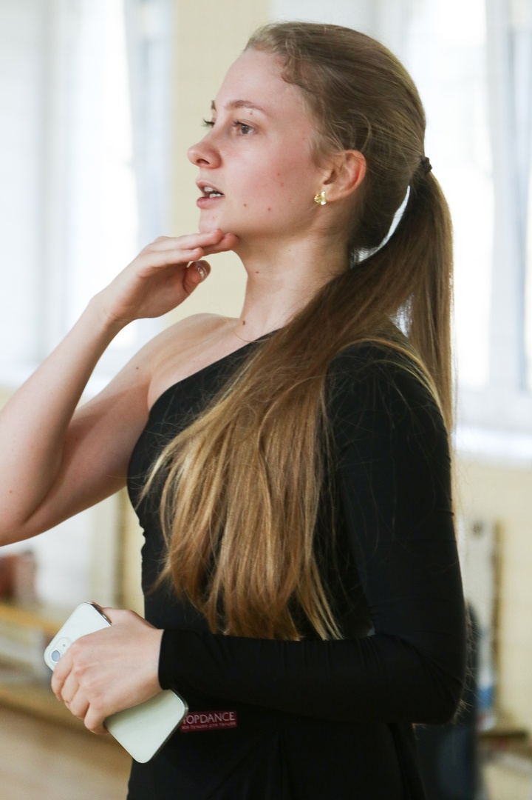
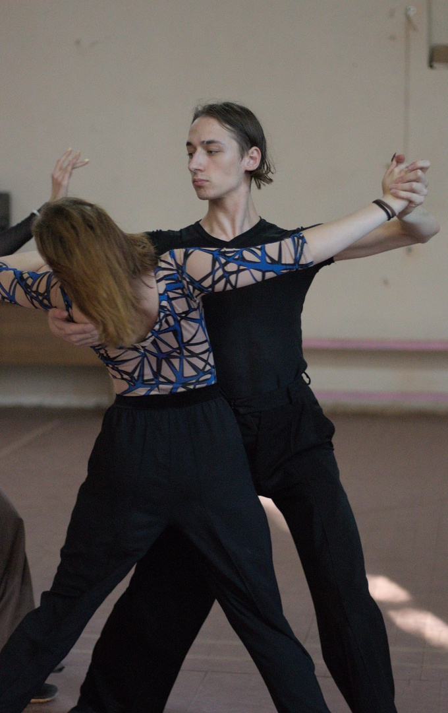
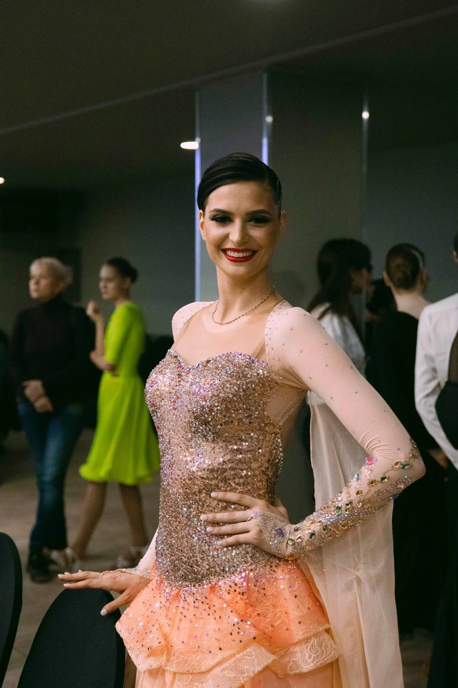
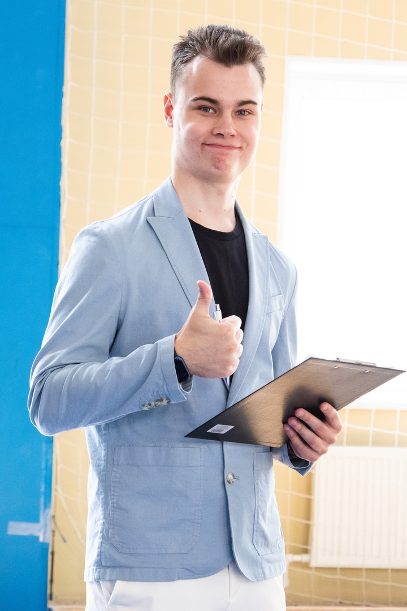
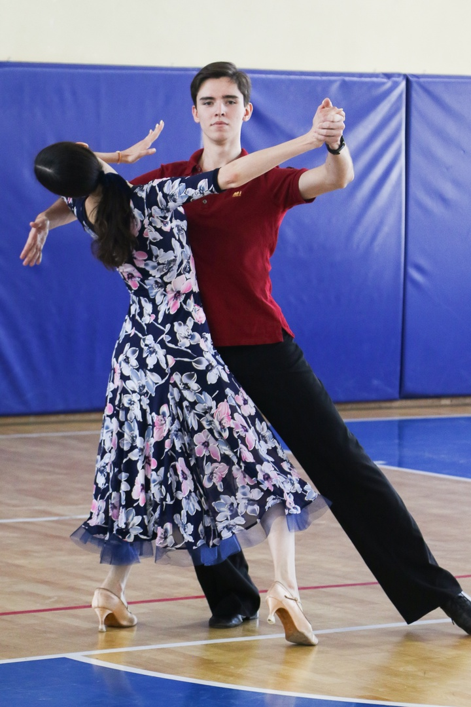
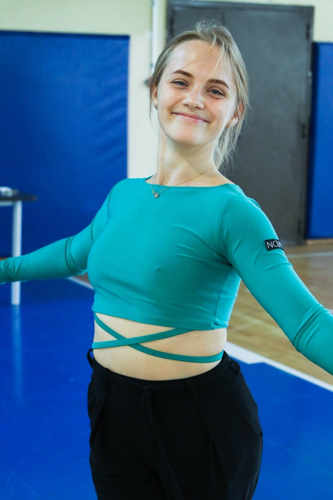

Тренерский состав секции включает студентов нашего университета, которые имеют богатый опыт в танцевальном спорте, лидерство на крупнейших турнирах России в федерациии ФТСАРР.
Наша секция имеет три уровня подготовки спортсменов, на которые распределены наши наставники:
Давайте поподробнее познакомимся с каждым из тренеров:
Старцева Арина
S/S классы мастерства. В секцию пришла на первом курсе весной 2021 года и сразу погрузилась в тренерскую деятельность. За 3,5 года в секции воспитала поток успешных спортсменов с нуля, на данный момент тренирует ребят продолжающего и профессионального уровня. Проводит тренировки только по латине, но в душе остается искренним фанатом 10-ти танцев. Также Арина выступает на студенческих и городских соревнованиях по танцевальному спорту.
Шапиро Михаил
A/B классы мастерства. С первого курса Михаил защищает честь сборной Университета на студенческих и городских соревнованиях в категориях европейской и латиноамериканской программ. С 2023 года является тренером продолжающего и профессионального уровней по стандарту.
Рева Наталья
S/S классы мастерства. Обаятельная и энергичная Наташа - тренер по латине базового уровня. За ее спиной огромный опыт в спорте. На данный момент Наташа обучается на хореографа в РГПУ им. А.И. Герцена и активно применяет свои знания в воспитании новоиспеченных спортсменов нашей секции. Также вместе со своим партнером защищает честь сборной Университета на студенческих соревнованиях.
Сидоренко Александр
B/C классы мастерства.
Никулин Василий
A/B классы мастерства.
Шевякова Полина
C/C классы мастерства.